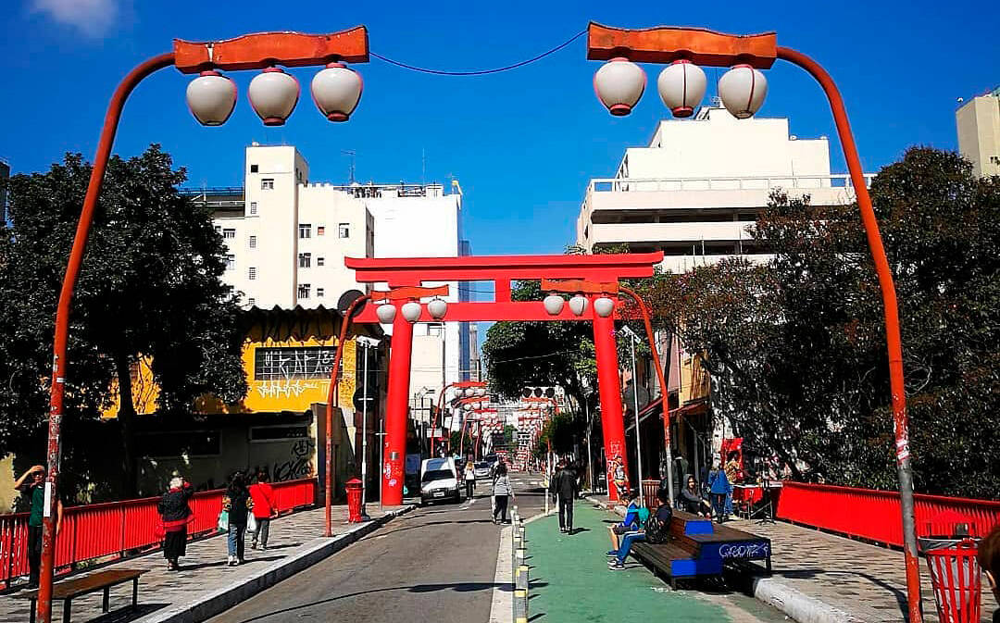

Paulista

Um dos principais centros financeiros da cidade, a avenida Paulista também possui diversas opções de entretenimento. Endereço do Museu de Arte de São Paulo, MASP, do Teatro Gazeta e muitos outros, a região é de fácil acesso graças às diversas linhas de ônibus que cruzam a avenida e à linha de metrô que passa por baixo dela. Saiba mais...
A Avenida Paulista sempre é assunto. O que será que estão falando a respeito no Instagram?
Os bares da Vila Madalena

Depois de um dia de trabalho, nada melhor do que um bom chopp,um petisco e uma conversa em uma mesa de bar. Opções de sobra na região das ruas Aspicuelta, Fradique Coutinho e Wisard.
Veja quais os melhores bares e restaurantes da região no Guia da VEJA São Paulo.
O Parque do Ibirapuera

Um dos cartões postais da cidade, o parque dispõe de mais de 1,5 km² de área verde, lagos artificiais e pistas de cooper e ciclismo. E se isso não fosse o suficiente, o parque costuma ser palco de diversos eventos culturais ao longo do ano.
Veja no mapa como chegar ao parque.
Mercadão de São Paulo

Conhecido oficialmente como Mercado Municipal Paulistano, o Mercadão é um ponto tradicional para quem aprecia boa comida. Famoso pelos pastéis e pelo sanduíche de mortadela, o espaço também impressiona pela arquitetura e pelos vitrais coloridos.
Saiba mais sobre esse ícone gastronômico no site oficial do Mercadão.
Museu do Futebol
Localizado no Estádio do Pacaembu, o Museu do Futebol é uma experiência interativa que celebra a paixão nacional. Ideal para todas as idades, o museu combina história, cultura e tecnologia para mostrar a importância do futebol na identidade brasileira.
Confira mais informações no site oficial.
Liberdade
Bairro tradicional da comunidade japonesa, a Liberdade é um verdadeiro pedaço do Japão em São Paulo. Com lojas típicas, feiras aos finais de semana e decoração temática, é o lugar ideal para quem busca cultura oriental e gastronomia asiática.
Descubra tudo que o bairro oferece no guia da Visite São Paulo.
Pinacoteca de São Paulo

Um dos museus de arte mais importantes do Brasil, a Pinacoteca abriga um vasto acervo de arte brasileira dos séculos XIX e XX. O edifício histórico por si só já é uma atração, localizado no Jardim da Luz.
Saiba mais sobre exposições e horários no site oficial da Pinacoteca.
Catedral da Sé

Situada na Praça da Sé, coração do centro histórico de São Paulo, a catedral é uma das maiores igrejas neogóticas do mundo. É possível visitar o interior e até conhecer a cripta onde estão sepultados bispos e figuras históricas.
Veja no Google Maps como chegar.
Beco do Batman

Um dos lugares mais instagramáveis de São Paulo, o Beco do Batman é um corredor artístico repleto de grafites coloridos. Localizado na Vila Madalena, o espaço é renovado constantemente por artistas urbanos.
Veja fotos e dicas de visita no Instagram oficial.
Jardim Botânico

Com trilhas, estufas de plantas nativas e lagos com vitórias-régias, o Jardim Botânico é ideal para quem busca tranquilidade e contato com a natureza. O espaço também abriga o Instituto de Botânica.
Informações sobre horários e ingressos estão no site oficial.
Farol Santander

Instalado no antigo prédio do Banespa, o Farol Santander une arte, história, tecnologia e gastronomia em um dos edifícios mais icônicos da cidade. Do alto, a vista panorâmica do centro de São Paulo é imperdível.
Conheça as atrações no site oficial.
Nenhum resultado encontrado